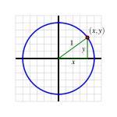
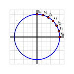
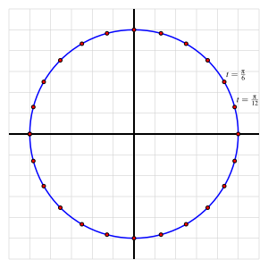
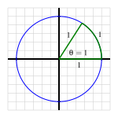
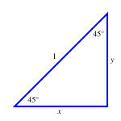
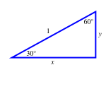
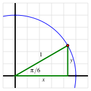
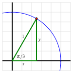
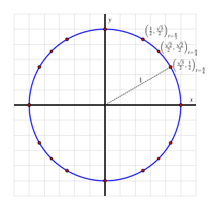

¿Hay puntos especiales naturales en el círculo unitario cuyas coordenadas podamos identificar exactamente?
¿Cómo podemos determinar la longitud del arco y la ubicación de puntos especiales en círculos que no sean el círculo unitario?
Como se demuestra en varios ejemplos diferentes en Section 2.1, ciertos fenómenos periódicos están estrechamente vinculados a los círculos y al movimiento circular. En lugar de trabajar regularmente con círculos de diferentes centros y radios, resulta ideal trabajar con un círculo estándar y construir todas las funciones circulares a partir de él. El círculo unitario es el círculo de radio \(1\) que está centrado en el origen, \((0,0)\text{.}\)
Si elegimos cualquier punto \((x,y)\) que se encuentre en el círculo unitario, el punto está asociado con un triángulo rectángulo cuya pierna horizontal tiene una longitud de \(|x|\) y cuya pierna vertical tiene una longitud de \(|y|\text{,}\) como se ve en Figure 2.2.1. Por el Teorema de Pitágoras, se sigue que
y esta es la ecuación del círculo unitario: un punto \((x,y)\) se encuentra en el círculo unitario si y solo si \(x^2 + y^2 = 1\text{.}\)
Figure2.2.1.Coordenadas de un punto en el círculo unitario.
Figure2.2.2.Un punto recorriendo el círculo unitario.
Para estudiar las funciones circulares generadas por el círculo unitario, también animaremos un punto y lo dejaremos recorrer el círculo. Comenzando en \((1,0)\) indicado por \(t_0\) en Figure 2.2.2, vemos una secuencia de puntos que resultan de viajar una distancia a lo largo del círculo que es \(1/24\) de la circunferencia del círculo unitario. Dado que la circunferencia del círculo unitario es \(C = 2\pi r = 2\pi\text{,}\) se sigue que la distancia de \(t_0\) a \(t_1\) es
\begin{equation*}
d = \frac{1}{24} \cdot 2\pi = \frac{\pi}{12}\text{.}
\end{equation*}
A medida que trabajamos para entender mejor el círculo unitario, comúnmente usaremos múltiplos fraccionarios de \(\pi\) ya que estos resultan en distancias naturales recorridas a lo largo del círculo unitario.
Preview Activity2.2.1.
En Figure 2.2.3 hay 24 puntos equidistantes en el círculo unitario. Dado que la circunferencia del círculo unitario es \(2\pi\text{,}\) cada uno de los puntos está \(\frac{1}{24} \cdot 2\pi = \frac{\pi}{12}\) unidades de distancia (recorridas a lo largo del círculo). Así, el primer punto en sentido antihorario desde \((1,0)\) corresponde a la distancia \(t = \frac{\pi}{12}\) recorrida a lo largo del círculo unitario. El segundo punto está el doble de lejos, y por lo tanto \(t = 2 \cdot \frac{\pi}{12} = \frac{\pi}{6}\) unidades a lo largo del círculo desde \((1,0)\text{.}\)

Figure2.2.3.El círculo unitario con \(24\) puntos equidistantes.
Etiqueta cada uno de los puntos subsecuentes en el círculo unitario con la distancia exacta que se encuentran en sentido antihorario desde \((1,0)\text{;}\) escribe cada fracción en su forma más simple.
¿Qué distancia a lo largo del círculo unitario corresponde a \(\frac{1}{4}\) de una rotación completa? ¿a \(\frac{5}{8}\) de una rotación completa?
Una forma de medir ángulos está conectada con la longitud del arco a lo largo de un círculo. Para un ángulo cuyo vértice está en \((0,0)\) en el círculo unitario, decimos que la medida del ángulo es \(1\) radián siempre que el ángulo intercepte un arco del círculo que tenga una longitud de \(1\) unidad, como se muestra en Figure 2.2.4. Nota particularmente que un ángulo que mide \(1\) radián intercepta un arco de la misma longitud que el radio del círculo.
Figure2.2.4.Un ángulo \(\theta\) de medida \(1\) radián.
Supón que \(\alpha\) y \(\beta\) son ángulos con medidas en radianes respectivas \(\alpha = \frac{\pi}{3}\) y \(\beta = \frac{3\pi}{4}\text{.}\) Asumiendo que vemos \(\alpha\) y \(\beta\) como teniendo su vértice en \((0,0)\) y un lado a lo largo del eje \(x\) positivo, dibuja los ángulos \(\alpha\) y \(\beta\) en el círculo unitario en Figure 2.2.3.
¿Cuál es la medida en radianes que corresponde a un ángulo de \(90^\circ\text{?}\)
Subsection2.2.1Radianes y grados
En Actividad de Vista Previa 2.2.1, introdujimos la idea de la medida en radianes de un ángulo. Aquí presentamos la definición formal de este término.
Definition2.2.5.
Un ángulo cuyo vértice está en el centro de un círculo 1
A menudo llamamos a tal ángulo un ángulo central.
mide \(1\) radian siempre que el arco que el ángulo intercepta en el círculo sea igual al radio del círculo.
Como se ve en Figura 2.2.4, en el círculo unitario esto significa que un ángulo central mide \(1\) radian siempre que intercepte un arco de longitud \(1\) unidad a lo largo de la circunferencia. Debido a esta importante correspondencia entre el círculo unitario y la medida en radianes (una unidad de longitud de arco en el círculo unitario corresponde a \(1\) radian), enfocamos nuestra discusión de la medida en radianes dentro del círculo unitario.
Dado que hay \(2\pi\) unidades de longitud a lo largo de la circunferencia del círculo unitario, se sigue que hay \(\frac{1}{4} \cdot 2\pi = \frac{\pi}{2}\) unidades de longitud en \(\frac{1}{4}\) de una revolución. También sabemos que \(\frac{1}{4}\) de una revolución corresponde a un ángulo central que es un ángulo recto, cuya medida en grados familiar es \(90^\circ\text{.}\) Si extendemos a un ángulo central que intercepta la mitad del círculo, vemos de manera similar que \(\pi\) radianes corresponde a \(180^\circ\text{;}\) esta relación nos permite convertir medidas de ángulos de radianes a grados y viceversa.
Convertir entre radianes y grados.
Un ángulo cuya medida en radianes es \(1\) radian tiene una medida en grados de \(\frac{180}{\pi} ^\circ\text{.}\) Un ángulo cuya medida en grados es \(1^\circ\) tiene una medida en radianes de \(\frac{\pi}{180}\text{.}\)
Activity2.2.2.
Convierte cada una de las siguientes cantidades a la medida alternativa: grados a radianes o radianes a grados.
\(\displaystyle 30^\circ\)
\(\frac{2\pi}{3}\) radianes
\(\frac{5\pi}{4}\) radianes
\(\displaystyle 240^\circ\)
\(\displaystyle 17^\circ\)
\(2\) radianes
Nota que en Figure 2.2.3 en la Actividad de Vista Previa, etiquetamos \(24\) puntos equidistantes con sus respectivas distancias alrededor del círculo unitario en sentido antihorario desde \((1,0)\text{.}\) Debido a que estas distancias están en el círculo unitario, también corresponden a la medida en radianes de los ángulos centrales que los interceptan. En particular, cada ángulo central con uno de sus lados en el eje \(x\) positivo genera un punto único en el círculo unitario, y con él, una longitud asociada interceptada a lo largo de la circunferencia del círculo. Un buen ejercicio en este punto es volver a Figure 2.2.3 y etiquetar cada uno de los puntos señalados con la medida en grados que es interceptada por un ángulo central con un lado en el eje \(x\) positivo, además de las longitudes de arco (medidas en radianes) ya identificadas.
Subsection2.2.2Puntos especiales en el círculo unitario
Nuestro estudio en profundidad del círculo unitario está motivado por nuestro deseo de entender mejor el comportamiento de las funciones circulares. Recuerda que a medida que recorremos un círculo, la altura del punto que se mueve a lo largo del círculo genera una función que depende de la distancia recorrida a lo largo del círculo. Siempre que sea posible, nos gustaría poder identificar la altura exacta de un punto dado en el círculo unitario. Dos triángulos rectángulos especiales nos permiten localizar exactamente una colección importante de puntos en el círculo unitario.
Activity2.2.3.
En lo que sigue, trabajamos para entender relaciones clave en \(45^\circ\)-\(45^\circ\)-\(90^\circ\) y \(30^\circ\)-\(60^\circ\)-\(90^\circ\) triángulos.
Figure2.2.6.Un triángulo rectángulo con dos ángulos de \(45^\circ\text{.}\)
Figure2.2.7.Un triángulo rectángulo con un ángulo de \(30^\circ\text{.}\)
Para el triángulo \(45^\circ\)-\(45^\circ\)-\(90^\circ\) con catetos de longitud \(x\) y \(y\) y una hipotenusa de longitud \(1\text{,}\) ¿qué nos dice el hecho de que el triángulo es isósceles sobre la relación entre \(x\) y \(y\text{?}\) ¿Cuáles son sus valores exactos?
Ahora considera el triángulo \(30^\circ\)-\(60^\circ\)-\(90^\circ\) con una hipotenusa de longitud \(1\) y el cateto más largo (de longitud \(x\)) situado a lo largo del eje \(x\) positivo. ¿Qué tipo especial de triángulo se forma cuando reflejamos este triángulo a través del eje \(x\text{?}\) ¿Cómo podemos usar esta perspectiva para determinar los valores exactos de \(x\) y \(y\text{?}\)
Supón que consideramos el triángulo relacionado \(30^\circ\)-\(60^\circ\)-\(90^\circ\) con una hipotenusa de longitud \(1\) y el cateto más corto (de longitud \(x\)) situado a lo largo del eje \(x\) positivo. ¿Cuáles son los valores exactos de \(x\) y \(y\) en este triángulo?
Sabemos por el factor de conversión de grados a radianes que un ángulo de \(30^\circ\) corresponde a un ángulo que mide \(\frac{\pi}{6}\) radianes, un ángulo de \(45^\circ\) corresponde a \(\frac{\pi}{4}\) radianes, y \(60^\circ\) corresponde a \(\frac{\pi}{3}\) radianes.
Figure2.2.8.Un ángulo que mide \(\frac{\pi}{6}\) radianes.
Figure2.2.9.Un ángulo que mide \(\frac{\pi}{4}\) radianes.
Figure2.2.10.Un ángulo que mide \(\frac{\pi}{3}\) radianes.
Usa tu trabajo en (a), (b) y (c) para etiquetar el punto señalado en cada una de Figura 2.2.8, Figura 2.2.9 y Figura 2.2.10, respectivamente, con sus coordenadas exactas.
Nuestro trabajo en Activity 2.2.3 nos permite identificar exactamente la ubicación de \(12\) puntos especiales en el círculo unitario. En la parte (d) de la actividad, ubicamos los tres puntos señalados en Figure 2.2.11 junto con sus respectivas medidas en radianes. Por simetría a través de los ejes de coordenadas y pensando en los signos de las coordenadas en los otros tres cuadrantes, ahora podemos identificar todas las coordenadas de los \(9\) puntos restantes.

Figure2.2.11.El círculo unitario con \(16\) puntos especiales cuya ubicación podemos determinar exactamente.
Además, notamos que hay cuatro puntos adicionales en el círculo que podemos ubicar exactamente: los cuatro puntos que corresponden a medidas angulares de \(0\text{,}\)\(\frac{\pi}{2}\text{,}\)\(\pi\text{,}\) y \(\frac{3\pi}{2}\) radianes, que se encuentran donde los ejes de coordenadas intersectan el círculo. Cada uno de estos puntos tiene \(0\) para una coordenada y \(\pm 1\) para la otra. Etiquetar todos los puntos restantes en Figure 2.2.11 es un ejercicio importante que deberías hacer por tu cuenta.
Finalmente, notamos que podemos identificar cualquier punto en el círculo unitario exactamente simplemente eligiendo una de sus coordenadas. Dado que cada punto \((x,y)\) en el círculo unitario satisface la ecuación \(x^2 + y^2 = 1\text{,}\) si conocemos el valor de \(x\) o \(y\) y el cuadrante en el que se encuentra el punto, podemos determinar la otra coordenada exactamente.
Subsection2.2.3Puntos especiales y longitud de arco en círculos no unitarios
Todo nuestro trabajo con el círculo unitario puede extenderse a círculos centrados en el origen con diferentes radios, ya que un círculo con un radio mayor o menor es una versión escalada del círculo unitario. Por ejemplo, si en cambio consideramos un círculo de radio \(7\text{,}\) las coordenadas de cada punto en el círculo unitario se magnifican por un factor de \(7\text{,}\) por lo que el punto que corresponde a un ángulo como \(\theta = \frac{2\pi}{3}\) tiene coordenadas \(\left( -\frac{7}{2}, \frac{7\sqrt{3}}{2} \right)\text{.}\) La distancia a lo largo del círculo se magnifica por el mismo factor: la longitud del arco a lo largo del círculo unitario desde \((0,0)\) hasta \(\left( -\frac{7}{2}, \frac{7\sqrt{3}}{2} \right) \) es \(7 \cdot \frac{2\pi}{3}\text{,}\) ya que la longitud del arco a lo largo del círculo unitario para este ángulo es \(\frac{2\pi}{3}\text{.}\)
Si pensamos más generalmente en un círculo de radio \(r\) con un ángulo central \(\theta\) que intercepta un arco de longitud \(s\text{,}\) vemos cómo el factor de magnificación \(r\) (en comparación con el círculo unitario) conecta la longitud del arco y el ángulo central según el siguiente principio.
Conectando longitud de arco y ángulos en círculos no unitarios.
Si un ángulo central que mide \(\theta\) radianes intercepta un arco de longitud \(s\) en un círculo de radio \(r\text{,}\) entonces
\begin{equation*}
s = r \theta\text{.}
\end{equation*}
En el círculo unitario, donde \(r = 1\text{,}\) la ecuación \(s = r\theta\) demuestra el hecho familiar de que la longitud del arco coincide con la medida en radianes del ángulo central. Además, también vemos cómo esta fórmula se alinea con la definición de medida en radianes: si la longitud del arco y el radio son iguales, entonces el ángulo mide \(1\) radián.
Activity2.2.4.
Determina cada uno de los siguientes valores o puntos exactamente.
En un círculo de radio \(11\text{,}\) la longitud del arco interceptado por un ángulo central de \(\frac{5\pi}{3}\text{.}\)
En un círculo de radio \(3\text{,}\) la medida del ángulo central que intercepta un arco de longitud \(\frac{\pi}{4}\text{.}\)
El radio del círculo en el que un ángulo de \(\frac{7\pi}{6}\) intercepta un arco de longitud \(\frac{\pi}{2}\text{.}\)
Las coordenadas exactas del punto en el círculo de radio \(5\) que se encuentra a \(\frac{25\pi}{6}\) unidades en sentido antihorario a lo largo del círculo desde \((5,0)\text{.}\)
Subsection2.2.4Resumen
La medida en radianes de un ángulo conecta la medida de un ángulo central en un círculo con el radio del círculo. Un ángulo central tiene una medida en radianes de \(1\) siempre que intercepte un arco de longitud igual al radio del círculo. En el círculo unitario, la medida en radianes de un ángulo central es exactamente el mismo valor numérico que la longitud del arco que intercepta a lo largo del círculo.
Si comenzamos en el punto \((1,0)\) y nos movemos en sentido antihorario a lo largo del círculo unitario, hay puntos especiales naturales en el círculo unitario que corresponden a ángulos de medida \(30^\circ\text{,}\)\(45^\circ\text{,}\)\(60^\circ\text{,}\) y sus múltiplos. Podemos contar en incrementos de \(30^\circ\) e identificar puntos especiales que corresponden a ángulos de medida \(30^\circ\text{,}\)\(60^\circ\text{,}\)\(90^\circ\text{,}\)\(120^\circ\text{,}\) y así sucesivamente; haciendo lo mismo con \(45^\circ\text{,}\) estos corresponden a ángulos de \(45^\circ\text{,}\)\(90^\circ\text{,}\)\(135^\circ\text{,}\) etc. En medida en radianes, estas secuencias juntas nos dan los ángulos importantes \(\frac{\pi}{6}\text{,}\)\(\frac{\pi}{4}\text{,}\)\(\frac{\pi}{3}\text{,}\)\(\frac{\pi}{2}\text{,}\)\(\frac{2\pi}{3}\text{,}\)\(\frac{3\pi}{4}\text{,}\) y así sucesivamente. Junto con nuestro trabajo que involucra triángulos de \(45^\circ\)-\(45^\circ\)-\(90^\circ\) y \(30^\circ\)-\(60^\circ\)-\(90^\circ\) en Activity 2.2.3, somos capaces de identificar las ubicaciones exactas de todos los puntos en Figure 2.2.11.
En cualquier círculo de radio \(r\text{,}\) si un ángulo central de medida \(\theta\) radianes intercepta un arco de longitud \(s\text{,}\) entonces se sigue que
\begin{equation*}
s = r\theta\text{.}
\end{equation*}
Esto muestra que la longitud del arco, \(s\text{,}\) se magnifica junto con el tamaño del radio, \(r\text{,}\) del círculo.
Exercises2.2.5Exercises
1.
Sea \((x,y)\) un punto en el círculo unitario. En cada una de las siguientes situaciones, determina el valor solicitado exactamente.
Supón que \(x = -0.3\) y \(y\) es negativo. Encuentra el valor de \(y\text{.}\)
Supón que \((x,y)\) está en el Cuadrante II y \(x = -2y\text{.}\) Encuentra los valores de \(x\) y \(y\text{.}\)
Supón que \((x,y)\) está a una distancia de \(\frac{29\pi}{6}\) unidades en sentido horario alrededor del círculo desde \((1,0)\text{.}\) Encuentra los valores de \(x\) y \(y\text{.}\)
¿En qué punto(s) exacto(s) intersecta la línea \(y = \frac{1}{2}x + \frac{1}{2}\) el círculo unitario?
2.
El círculo unitario está centrado en \((0,0)\) y tiene un radio \(r = 1\text{,}\) del cual el Teorema de Pitágoras nos dice que cualquier punto \((x,y)\) en el círculo unitario satisface la ecuación \(x^2 + y^2 = 1\text{.}\)
Explica por qué cualquier punto \((x,y)\) en un círculo de radio \(r\) centrado en \((h,k)\) satisface la ecuación \((x-h)^2 + (y-k)^2 = r^2\text{.}\)
Determina la ecuación de un círculo centrado en \((-3,5)\) con radio \(r = 2\text{.}\)
Supón que el círculo unitario se magnifica por un factor de \(5\) y luego se desplaza \(4\) unidades a la derecha y \(7\) unidades hacia abajo. ¿Cuál es la ecuación del círculo resultante?
¿Cuál es la longitud del arco interceptado por un ángulo central de \(\frac{2\pi}{3}\) radianes en el círculo \((x-1)^2 + (y-3)^2 = 16\text{?}\)
Supón que el segmento de línea desde \((-2,-1)\) hasta \((4,2)\) es un diámetro de un círculo. ¿Cuál es el centro, radio y ecuación del círculo?
3.
Considera el círculo cuyo centro es \((0,0)\) y cuyo radio es \(r = 5\text{.}\) Deja que un punto \((x,y)\) recorra el círculo en sentido antihorario desde \((5,0)\text{,}\) y di que la distancia a lo largo del círculo desde \((5,0)\) está representada por \(d\text{.}\)
Considera el punto \((a,b)\) que se genera por el ángulo central \(\theta\) con vértices \((5,0)\text{,}\)\((0,0)\) y \((a,b)\text{.}\) Si \(\theta = \frac{\pi}{6}\text{,}\) ¿cuáles son los valores exactos de \(a\) y \(b\text{?}\)
Responde la misma pregunta que en (a) excepto con \(\theta = \frac{\pi}{4}\) y \(\theta = \frac{\pi}{3}\text{.}\)
¿Qué distancia ha recorrido el punto \((x,y)\) después de haber recorrido el círculo una revolución completa?
Sea \(h = f(d)\) la función circular que rastrea la altura del punto \((x,y)\) como una función de la distancia, \(d\text{,}\) recorrida en sentido antihorario desde \((5,0)\text{.}\) Dibuja un gráfico preciso de \(f\) a través de dos períodos completos, etiquetando varios puntos especiales en el gráfico así como la escala horizontal y vertical de los ejes.